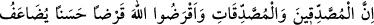
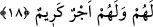

kovalayan düşmanından kendisini kurtarır, dedi. Perdeler kalktı, kapılar açıldı, yüzleri
aylar gibi çocuklar bana yukardan baktılar, ejderha da yaklaşmıştı. Şaşırıp kaldım. Bir
çocuk bağırdı, hepiniz bakın ona ejderha yaklaştı, dedi. Çocuklar grup grup gelip bana
baktılar, onların arasında benim ölen kızım da vardı. Beni görünce ağladı ve vallâhi
benim babam, dedi ve nurdan bir küfe içinde ok gibi üzerime atıldı. Önüme kadar
gelince sol elini uzatıp sağ elimden yapıştı ben de asıldım, o sağ elini çekerek beni
kaçırdı. Beni oturttu ve kucağıma oturdu. Sağ eliyle sakalıma vurdu ve Babacığım
“Îmân edenlerin Allah’ı anma ve O’ndan inen Kur’an sebebiyle kalplerinin
ürpermesi zamanı daha gelmedi mi?” âyetini okudu.
Ben ağladım ve kızcağızım, sizler Kur’an biliyor musunuz, dedim. Babacığım biz
Kur’ân’ı sizden daha iyi biliriz, dedi. Öyleyse beni mahvetmek isteyen o ejderhayı bana
anlat dedim. O senin kötü amelindir, onu kuvvetlendirmişsin, o da seni cehennem
ateşine batırmak istedi, cevabını verdi. Öyleyse yolda karşılaştığım ihtiyar neydi onu da
anlatır mısın, dedim. O da senin iyi amelindir, ama onu zayıflatmışsın. Büyüttüğün kötü
ameline gücü yetmedi. Dedim ki, yavrucuğum bu dağda ne yapıyorsunuz. O da dedi ki:
Biz müslümanların küçük çocuklarıyız, burada iskân edildik, sizi kıyâmete kadar burada
bekliyoruz, bize geldiğinizde size şefâat edeceğiz. Korku içinde uyandım, sabahleyin de
üzerinde bulunduğum bu kötülükten ayrıldım ve Allah’a tevbe ettim. İşte tevbemin
sebebi budur.
Gaflet yakasından kaldır hemen başını
Yoksa utançla önüne bakarsın yarın
Ey uykucu şimdi uyanman lâzım senin
Ölüm uyandırırsa ne fayda verir sana
İnler durursun toprağa verdiğin yavrunun acısıyla
Sebep ne tertemiz geldi o ve gitti tertemiz
Sen de temiz geldin ama dikkat et gitme kirlenip
Çünkü çok yazık olur kirlenip de girmen toprağa
18. Sadaka veren erkeklere ve sadaka veren kadınlara, Allah’a güzel bir ödünç
verenlere verdiklerinin karşılığı kat kat ödenir. Onlara değerli bir mükâfât vardır.
“Sadaka veren erkeklere ve sadaka veren kadınlara ve Allah’a güzel bir ödünç
verenlere,” mânâ itibariyle sıla üzerine atfedilmiştir. Yâni, sadaka veren insanlar kadın
olsun erkek olsun ve Allah’a güzel ödünç veren erkekler ve kadınlar demektir. Karz-ı
hasen malın en helâlinden hâlis bir niyet ve gönül hoşluğuyla sadaka almaya müstehak